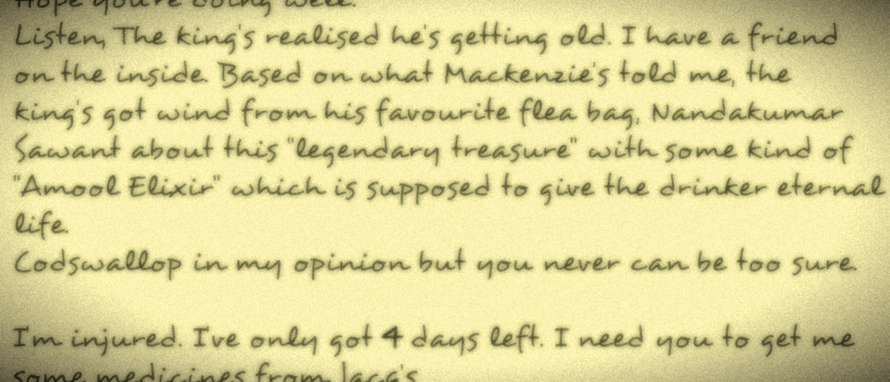

The Fraud
They gather in the middle of the room for Gab to explain his 'Ridiculously complicated but still
functional' plan! He first brings them all up to speed on the current happenings. Here's a recap
for you too:
Colly the Polly found an unconscious man
He said something no one understood
Gab figured out that he (The unconscious man) said 'There is a treasure buried follow the
map'
Gab got a scroll from a guy named 'Remy'
Gab met with Remy who, was his fathers' friend and told him--
Asrea
"Whoa whoa whoa! Hold up one second. You said that Remy said that he was your father's friend right?"
"That's right, Asrea"
Gab
Asrea
"Then why was yesterday the first time you've heard about him? I mean, wouldn't your father's childhood friend have met you after your father went missing?"
"Uh....That makes sense but...."
Gab
Asrea
"So let ME get this straight, You went to a giant's hut in the middle of the night of whom you've never heard of and took word for word that there is a trasure? You do hear how crazy that sounds right."
"Well, how do you know Remy then?"
Gab
(Getting all defensive)
Colly the Polly
"Hey guys? Why wasn't Remy at Asrea's performance tongiht? I mean he stays here after all. And I know that God Fathers are weird and all but he didn't even show up"
"One question at a time! Go ahead Asrea, explain your relationship with Remy."
Gab
Asrea
"My parents moved to PunkLand just after I was born. But few weeks in and there was trouble, don't ask it's a long story. Anyway, Remy did us a big favor. Too big to repay. All he wanted was to be my Godfather or so my mom says. It did seem a weird request at the time since we expected him to ask for gold frogs or something, but we were in a hurry to catch a whale to France (At that time whales were the fastest mode of transportation!) I haven't seen or heard from him since. I've lived in France all my life. Today was my first performance in PunkLand and it shocked me when you told me that he was your dad's friend.
Colly the Polly
Okay my turn to monologue! Here are my questions:
Why didn't Remy communicate with Asrea or Gab?
Why wasn't he at the performance tonight because I didn't see a giant at the hall?
Jacq E Chan, will you be my girlfrind?
And finally, Are we going treasure hunting or not?
"Listen GoatMan, we all have the same questions none of which we can answer except the girlfriend one. I think we have to first find out whether Remy is a fraud I know a sage who goes my the name 'Maa Rhea' She owned this little bakery named 'Rua de Pastelaria' she went out of business but we can definitely meet her. She owes me a favor anyway."
Jacq E Chan
Colly the Polly
"Wait what's your answer about the girlfriend question"
"No! Not even with a thousand condoms on your peashooter!!! Also the incident."
Jacq E Chan
"MY GOD! What incident are you talking about?"
Gab
Both
"Long story"
Asrea
Pull it together guys! So now, we've established that no one here knows Remy properly and we can't trust what he has to say. So the plan moving forward is to what, find out everything about Remy, right?
"Yes. First of guys, I'm sorry that I wasted your time without even knowing who this Remy was. It was a very foolish thing to trust him and--"
Gab
Suddenly there was a thunderous knocking at the door. They all nearly jumped out of their skins when, it hit Gab.
"Guys! Remy said he would "Get medicines from Jacq's" tonight! I'll explain later but for now we have to hide. Jacq E Chan, after we've hidden answer the door. Pretend to be sleepy. The rest of you follow me okay"
Gab (Whispering)
They all nodded. Jacq went to mess up her hair and put a sleeping mask on her head while the other three hid behind the curtain near the bed. The thunderous knocking started again as they saw Jacq's shadow move towards the door.
Remy
Took you long enough!
Well I was sleeping wasn't I?
Jacq
Remy
Don't get smart with me woman! I need some potions
What do you need you fatass?
Jacq
Remy
WHAT WAS THAT?
I said what do you need?
Jacq
Remy
Give me one vial of the 'universal healer potion for infections' and two vials of 'fish-brine in cod oil'
Here you are! That'll be 10 gold frogs.
Jacq
Remy
(Inhaling the fumes emnating from the vials before saying) What do I look like a bank? I'll pay you when I want. I'm outta here
(Stupid, big, lazy, ugly smelly piece of sh--)
Jacq
Remy walked out and slammed the door behind him. The other 3 came out from behind the curtain. Asrea put her hand around Jacq and comforted her, while Gab and Colly were almost through the roof with anger.
All three
We're so sorry about that Jacq.
I'M GOING TO EXACT MY REVENGE ON THAT SILLY OAF! HE'LL NEVER MESS WITH A WITCH AGAIN!
Jacq (YELLING)
While Jacq calmed down, Gab explained the rest of his story with no interruptions from the others. He told them about his dad being alive supposedly and sending the letter and asking Remy for help when Jacq exclaimed.
Jacq
We have to stop him!
We know that but what's the hurry?
Gab
Jacq
When he came here he asked for One vial of universal healer right? Well all that seemed innocent enough since healer never hurt anyone
What are you getting at?
Gab
Jacq
The Fish-brine in cod-oil is a muscle depressent! It paralyzes you!
But don't worry! Before he came I had heard enough about him to know that he
couldn't be trusted. So I diluted the fish-brine when he wasn't looking with some water
and orange essence so it would lose it's effectiveness. Heard how he took a big
whiff of it before he left? He wanted to make sure it was really the fish-brine. You see
all muscle depressents give out a slight orange essence. No iea how fish can give an
orange essence though!
Well thanks for all that. Here are 10 gold frogs by the way!
Gab
Jacq
Thanks Gab!
Come on guys focus. What's our next move?
Colly
Jacq
Well, since we established that Remy cannot be trusted, we cannot be sure that there is a map or treasure or even Gab's father for that matter. There is a very good chance Remy was just sucking up to you, Gab
Damn! Speaking of which, have any of you ever heard of King Alexanders' treasure?
Colly
All three
Who's treasure?
The treasure mentioned in Gab's dad's letter you dolts.
Colly
Gab
But I don't remember reading whose treasure it was in the letter, it only said there was a legend of a treasure.
Then how did Remy know the treasure belonged to King Alexander?
Asrea
The silence that followed was the longest silence ever recorded on the Punklandian book of PunkLand records. Ironic, Because silence cannot be recorded! Jokes apart, here's a flash back to the letter.
Gab
Guys y'all are right. But how many more things has he just made up then who knows?
Can you recall everything that happened everything that was said and also your dad's letter clearly?
Asrea
Gab
Of course I can! Okay guys listen up, we are now going to compare what Remy and my dad's letter said. Make a note of any loopholes you find alright? Let's go.
Gab retells the HOLE WHOLE story. First he tells the conversation between him and Remy
and
then his Dad's letter. Since you are probably lazy to go back and read those, here are two links
to them. Open them in different windows and compare for yourself or just scroll down to view the
alrady compared versions!
Gab
And that's it guys, find any loopholes?
All I have are:
Your dad never mentioned the councilmen being fed to
the lions
The promise that Sawant couldn't return until he found the treasure
And passing the burden onto someone else
Colly
Asrea
And Jacq and I found:
How did he know about sawant getting promoted? I
mean he stays here after all why does he know Kensington politics?
Also how did he
know the logo meant the kings guard?
Now I'm getting tensed Guys. I'm beginning to question whether Remy even stays in Punkland. If only there was a way to find the records of all PunkLandians...
Gab
Jacq
There is! I heard when King Jake Hamburg ruled, he made it mandatory for all residents be recorded into the books of names. There is a cabin built near a Fig Tree or commongly known as 'The Tree'. It's 15 miles northwest of here. Guys for real though, are we taking down Remy?
Definitely
All three
Jacq
Then we definitely need to talk to Maa Rhea from Rua she'll know what a giant's weaknesses are.
Alright it's settled then. It's getting late Guys let's turn in. We've got a big day tomorrow. I mean today!
Gab
The four of them bunk in two different beds. Gab and Colly in one bed (a big gap between them though!) and Asrea and Jacq in the other. They fall asleep in no time. Outside, Steven to wake up with a grunt again.